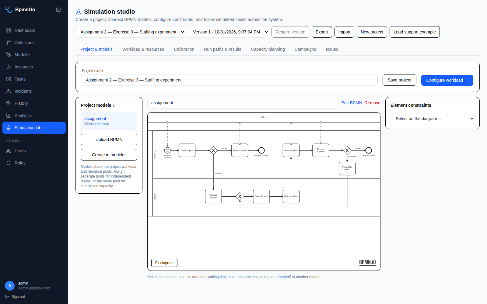
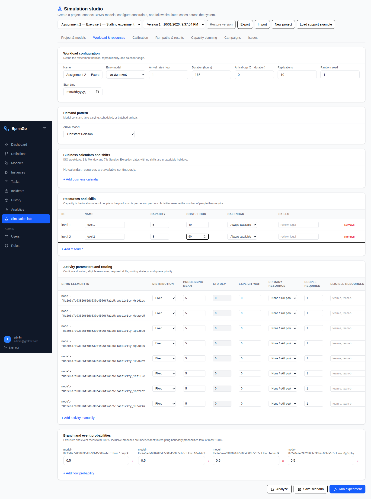
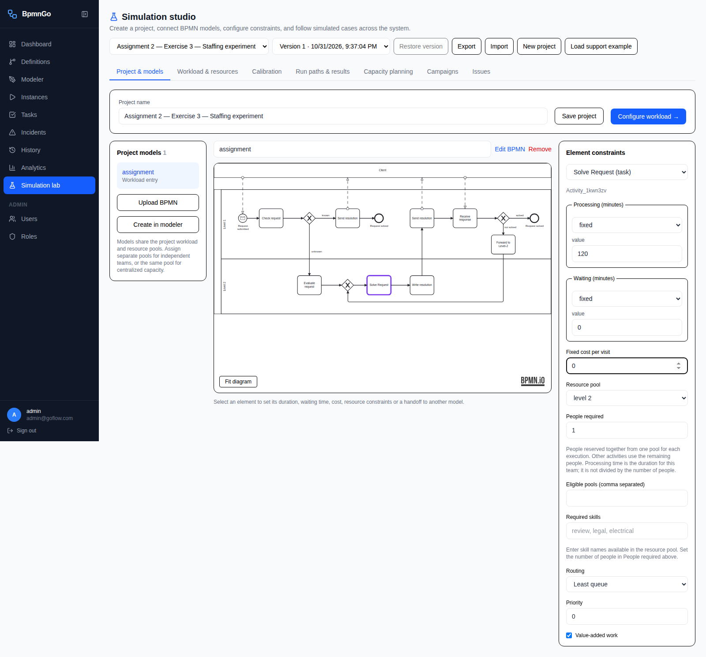
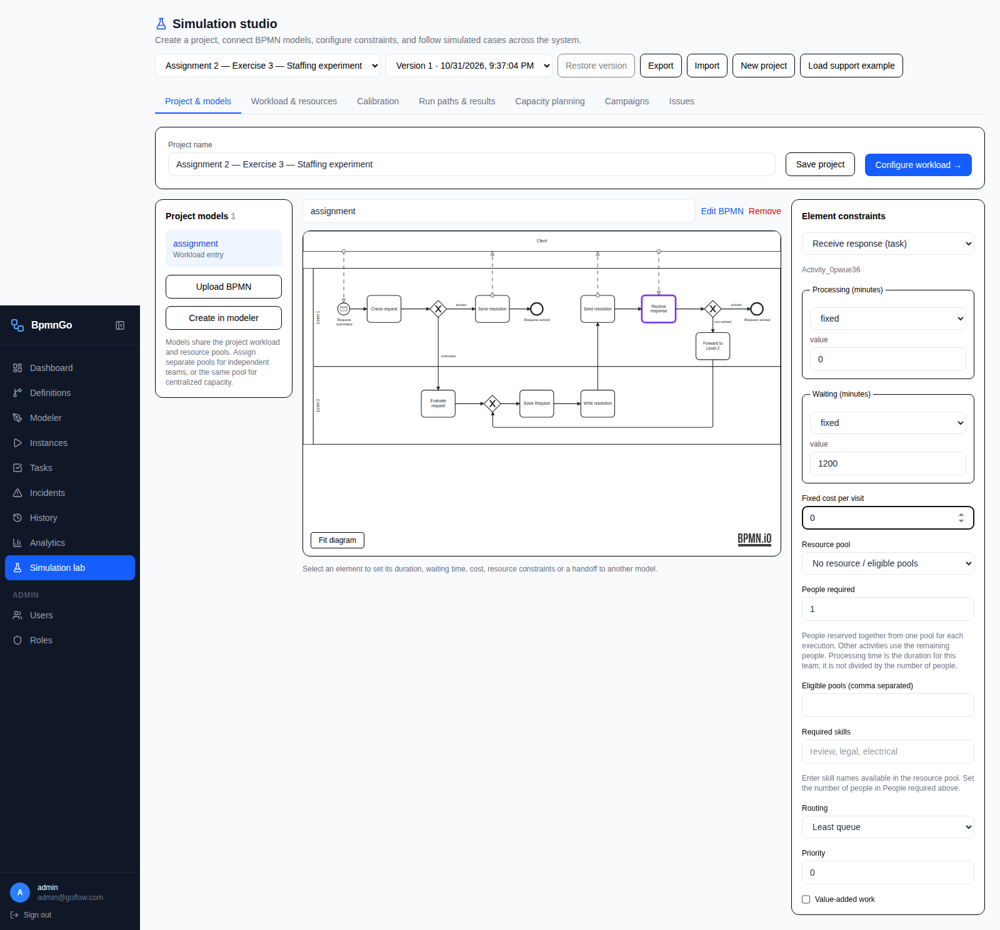
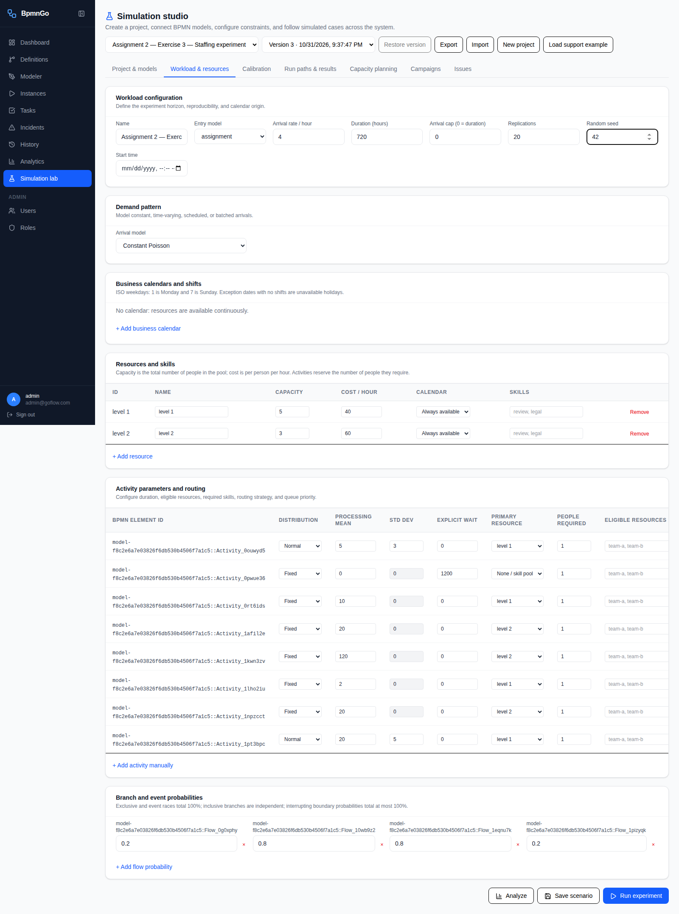
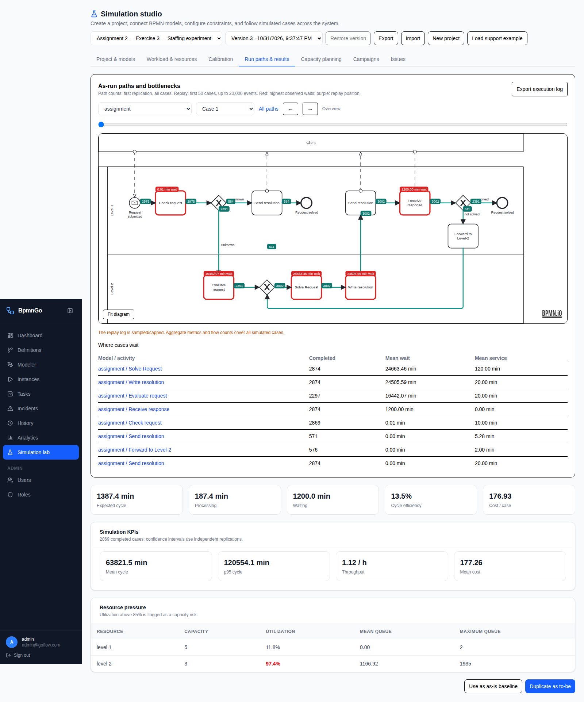
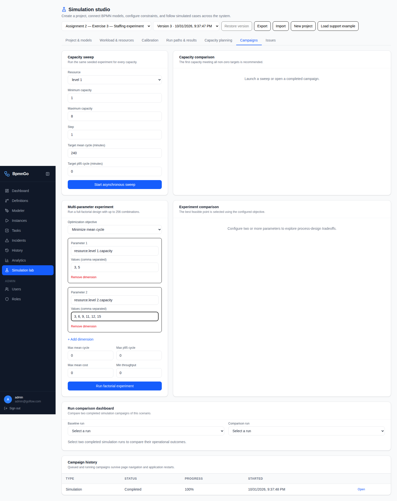
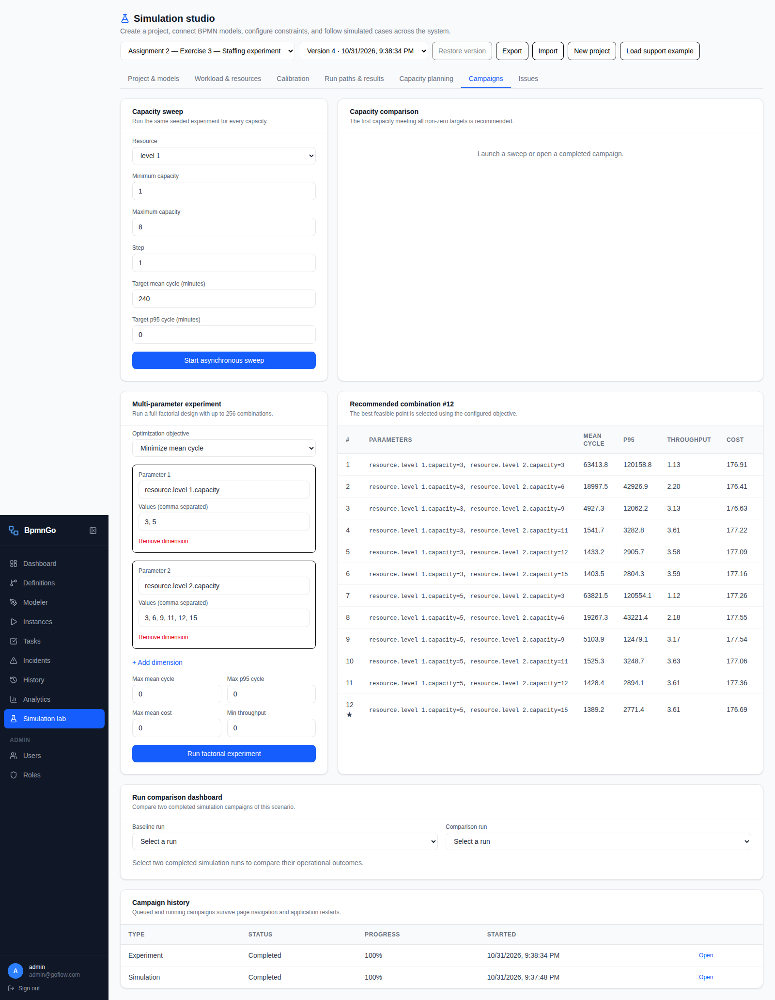
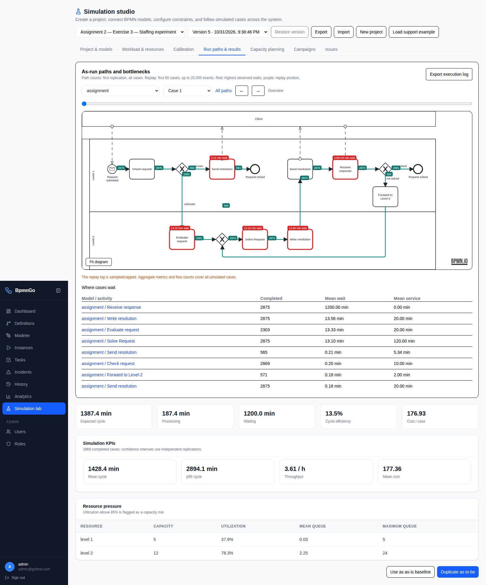
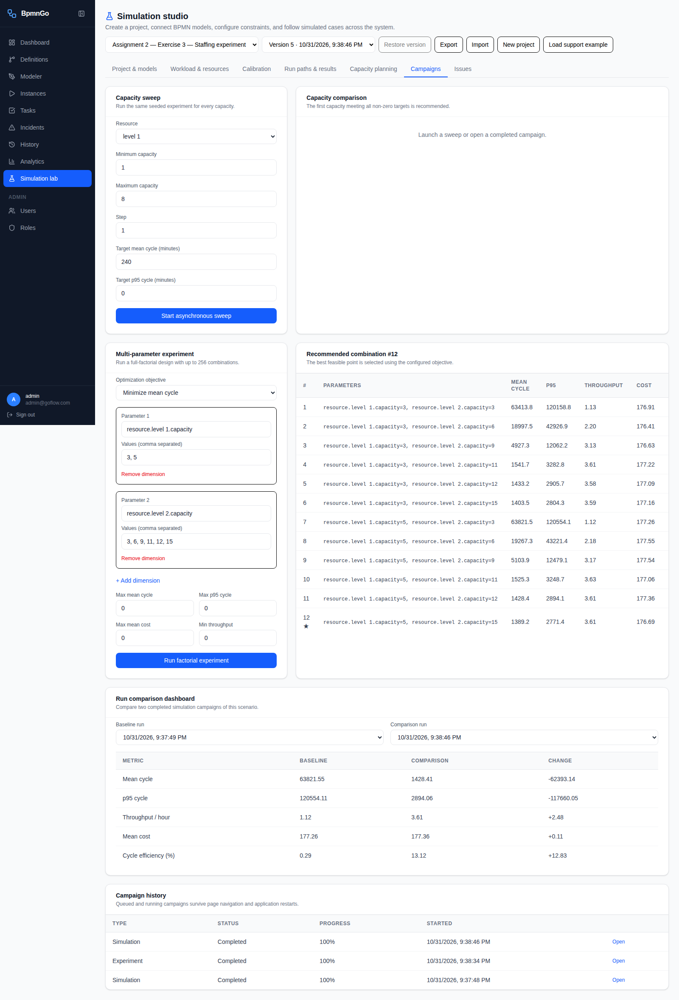

Exercise 3 — Simulate the process and compare staffing
The Level-2 pool is the bottleneck. Moving from 5/3 to 5/12 staff reduces mean cycle time from 1,063.7 to 23.8 hours in this experiment.
Watch the demonstration
The first recording shows model import and configuration. The second shows the workload, completed baseline, staffing campaign and comparison dashboard. Screenshots below provide readable checkpoints.
Part 1 — Model and activity configuration
Part 2 — Runs and staffing comparisons
Experiment assumptions
Four Poisson arrivals per hour; a 720-hour arrival horizon; 20 independent seeded replications per configuration, seeds 42–61; unlimited arrival cap; empty initial system; continuous resource availability. The 12-combination campaign covers 240 replications. Two separate detailed simulations add 40 replications.
Only the client-response delay remains as an explicit wait. Queueing caused by unavailable staff still occurs naturally. The failed-resolution loop remains at 20%. No calendar, skills, priority override, fixed activity cost or three-person team is added.
All durations below are minutes. Fixed distributions use the supplied means where no variability is specified. The two communication activities use the supplied normal-distribution parameters. BpmnGo resamples negative normal draws, so the realized mean of the short 5-minute task is slightly above 5 minutes; this is a modeling limitation, not a staffing effect.
People required = 1 for all staffed activities. Forward to Level-2 consumes two minutes of Level-1 labor here; Exercise 1's handoff-cost exclusion is not applied to this simulation. Receive response and forwarding are marked non-value-added, while actual problem-processing activities are marked value-added. A shared pool releases staff between activities; the model does not preserve a named employee across the whole case.
1. Create and import
Simulation studio → New project → name it “Assignment 2 — Exercise 3 — Staffing experiment” → Save project → Upload BPMN.

2. Set the baseline resources
Add resource level 1 with capacity 5 and cost €40/person/hour; add level 2 with capacity 3 and cost €60/person/hour. Use Always available. Each staffed activity needs ONE person; pool capacity is the number of requests that can be served concurrently.

3. Remove internal waits
On every activity, set explicit Waiting to zero except Receive response. Set Solve Request to 120 minutes of fixed processing, resource level 2, People required 1. Configure the remaining activities using the reference table below.

4. Retain the client delay
Receive response has processing 0, waiting 1200 minutes, and no resource. Client testing does not reserve an employee. The known/unknown probabilities are 0.2/0.8; solved/not solved are 0.8/0.2.

5. Set demand and run the baseline
Workload & resources: Constant Poisson, rate 4/hour, duration 720 hours, arrival cap 0, replications 20, seed 42. Click Run experiment; once completed, open the Simulation row in Campaign history.

6. Inspect the baseline
Use the Simulation KPIs and Resource pressure panels. The Expected cycle cards are analytical values without capacity queues; they are not the simulated cycle time. The baseline’s overloaded Level-2 pool produces a large backlog.

7. Configure the staffing comparison
Campaigns → Multi-parameter experiment. Parameter 1: resource.level 1.capacity with values 3, 5. Parameter 2: resource.level 2.capacity with values 3, 6, 9, 11, 12, 15. Objective: Minimize mean cycle. Leave constraints at 0, then click Run factorial experiment. The separate Capacity sweep form is not used.

8. Inspect all 12 combinations
Open the completed Experiment row. Every configuration uses 20 replications, the same demand horizon and initial seed. The application selects 5/15 because the chosen objective is mean cycle time and no staffing-budget constraint was applied.

9. Run a detailed 5/12 comparison
Return to Workload & resources and set level 2 capacity to 12, leaving level 1 at 5. Click Run experiment. Open that completed run to inspect utilization, queues, costs and the replay.

10. Compare and preserve the baseline
Campaigns → Run comparison dashboard: select the earlier Simulation as Baseline run and the later Simulation as Comparison run. Finally restore level 2 capacity to 3 and Save scenario. The campaign snapshots preserve their original capacities, so both results remain accessible.

All staffing results
Cycle and p95 values below are in hours; the BpmnGo campaign table displays minutes. Each value averages the corresponding metric across 20 replications; p95 is the average of per-replication percentiles, not a pooled percentile.
Staffing €/h is an additional budget calculation: 40 × Level-1 count + 60 × Level-2 count. BpmnGo's per-case cost charges actual processing labor and excludes idle payroll.
Detailed baseline versus 5/12
Approximate 95% confidence intervals for mean cycle time: baseline 1,047.12–1,080.26 hours; 5/12 23.68–23.93 hours. These use the application's normal-approximation interval across replications. The factorial summary does not preserve intervals for every point.
Runs: baseline b46e0b16-c3fa-49f4-ba82-83c209073349; detailed comparison 01d1074d-01a0-4e6a-b86b-7b7df033862f; factorial campaign c22fa1da-b5c4-4f34-b204-ec904fb7bb27.
Discussion for the assignment
- The original Level-2 staffing is overloaded. For each incoming request, expected Level-2 work is 0.8 × 20 + (0.8 / 0.8) × (120 + 20) = 156 minutes. Four arrivals/hour require 10.4 staff-hours per hour. Pools of 3, 6 and 9 cannot sustain that workload. Eleven is the first integer capacity above the workload, with little spare capacity.
- Increasing Level-2 capacity makes a large difference up to roughly 11–12 staff. With five Level-1 employees, the mean cycle is 85.1 hours at nine Level-2 staff, 25.4 hours at eleven, and 23.8 hours at twelve. Mean Level-2 queue length drops from about 1167 at the baseline to 2.25 at 5/12.
- Beyond that, client response dominates. The expected number of client-response visits per incoming request is one: 80% escalation × 1/(1 − 20% rework). This contributes about 20 hours to the mean cycle even without staff queues. Adding roughly 3.1 hours of work yields a no-resource-queue analytical reference near 23.1 hours. The 5/15 result of 23.2 hours is close to that reference.
- Additional staff have diminishing returns and a budget cost. Moving from 5/12 to 5/15 saves about 39 minutes of mean cycle time while raising the fully staffed hourly budget from €920 to €1100. The application's “recommended” point optimizes cycle time only; it does not establish a cost-optimal staffing decision.
- Level-1 staffing can also be reconsidered. The 3/12 result is 23.89 hours versus 23.81 for 5/12, with a staffing budget of €840/hour versus €920/hour. This is a candidate for further review, not proof of equivalent service: the factorial output does not give a confidence interval for the difference, and no service-level target was supplied.
- Labor cost per case stays around €177. Changing staff numbers changes waiting much more than the amount of work per case. Small cost and path differences are stochastic. The same initial seeds do not guarantee identical per-case paths when staffing changes event order and therefore the order of random draws.
Read these metrics correctly
The engine stops admitting requests after 720 hours and then drains every admitted request. An overloaded run can therefore complete successfully while taking much longer than 720 hours. The 1,063.7-hour baseline mean is a finite-batch result, not a steady-state waiting-time estimate for an overloaded queue.
Throughput divides completions by elapsed time through the final completion, and utilization is also measured through that drain period. Consequently, a sufficiently staffed configuration can show throughput below 4/hour, and baseline Level-1 utilization can look unusually low while Level-2 drains its backlog. Do not interpret these as steady-state rates during the arrival window.
The reported completed-case count is an integer average per replication, approximately 2869, not the total across all 20 replications. Maximum queue sizes in aggregate results are averages of per-replication maxima. Replay includes only the first 50 cases of the first replication and can be capped; aggregate metrics cover the full runs.
No warm-up deletion was applied. An ongoing-production capacity study would benefit from longer horizons, measurement restricted to the arrival window, and checks across additional independent seeds. These runs satisfy the requested finite-horizon comparison under the stated assumptions.
Open the saved results yourself
Open the saved project, select Campaigns, and scroll to Campaign history. Open Experiment for all 12 configurations. The earlier Simulation is 5/3; the later Simulation is 5/12. Open a simulation to inspect its replay and resource pressure. Choose those same two simulations in the comparison dashboard to reconstruct the comparison.
The saved scenario is back at the baseline 5/3 staffing. Each completed run retains its original configuration snapshot. No additional runs are needed to inspect the completed work.